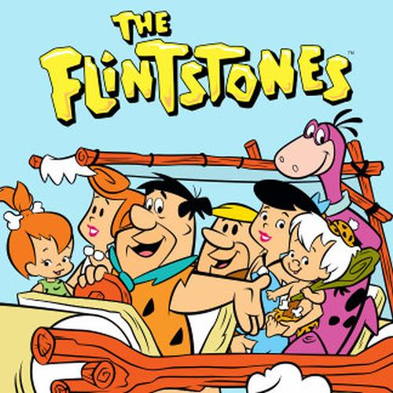
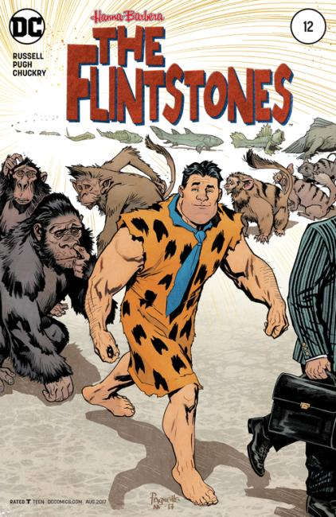

The Flintstones

Creators: William Hanna, Joseph Barbera
Series: 6 seasons, 1960 Hanna-Barbera Animation for ABC
Owner: Warner Bros.
The Flintstones is an American animated sitcom produced by Hanna-Barbera for ABC. The series takes place in a romanticized Stone Age setting, depicts the lives of the titular characters and their next-door neighbors and best friends. It was originally broadcast from September 30, 1960, to April 1, 1966, in a prime time schedule, the first such instance for an animated series.
The continuing popularity of The Flintstones rested heavily on its juxtaposition of modern everyday concerns in the Stone Age setting. The Flintstones was the most financially successful network animated franchise for three decades, until The Simpsons debuted decades later. In 2013, TV Guide ranked The Flintstones the second Greatest TV Cartoon of All Time (after The Simpsons).
I could not find the total money generated by the franchise, but just the live action movie alone generated over $350 million dollars in 1994.
Television:
- The Flintstones (1960-66) (six seasons)
- The Pebbles and Bamm-Bamm Show (1971–72) (one season)
- The Flintstone Comedy Hour / The Flintstone Comedy Show (1972–74) (one season)
- Scooby's All-Star Laff-A-Lympics (1977-79) (two seasons)
- Fred Flintstone and Friends (1977–78) (compilation series)
- The New Fred and Barney Show (1979) (one season)
- Fred and Barney Meet The Thing (1979) (one season)
- Fred and Barney Meet the Shmoo (1979–80) (one season)
- The Flintstone Comedy Show (1980–82) (two seasons)
- The Flintstone Funnies (1982–84) (one season)
- The Flintstone Kids (1986–88) (two seasons)
- Dino: What a Cartoon! – featuring "Stay Out!" (1995) and "The Great Egg-Scape" (1997)
- Cave Kids: Pebbles & Bamm-Bamm (1996) (one season)
- Johnny Bravo - "Wilderness" (2004; crossover)
- Harvey Birdman, Attorney at Law (2002-2007; crossovers)
- The Grim Adventures of Billy & Mandy - "Modern Primitives" (2006; crossover)
Theatrical animated feature:
- The Man Called Flintstone (1966, released by Columbia Pictures)
Television specials:
- A Flintstone Christmas (1977)
- The Flintstones: Little Big League (1978)
- The Flintstones Meet Rockula and Frankenstone (1979)
- The Flintstones' New Neighbors (1980)
- The Flintstones: Fred's Final Fling (1980)
- The Flintstones: Wind-Up Wilma (1981)
- The Flintstones: Jogging Fever (1981)
- The Flintstones' 25th Anniversary Celebration (1986)
- The Flintstone Kids' "Just Say No" Special (1988)
- Hanna-Barbera's 50th: A Yabba Dabba Doo Celebration (1989)
- A Flintstone Family Christmas (1993)
Television movies:
- The Jetsons Meet the Flintstones (1987)
- I Yabba-Dabba Do! (1993)
- Hollyrock-a-Bye Baby (1993)
- A Flintstones Christmas Carol (1994)
- The Flintstones: On the Rocks (2001)
Live-action films:
- The Flintstones (1994)
- The Flintstones in Viva Rock Vegas (2000)
- Direct-to-video films
- The Flintstones & WWE: Stone Age SmackDown! (2015)
- Hanna-Barbera Cinematic Universe film
- Untitled Flintstones Movie Reboot (TBA)
Video games:
- Yabba Dabba Doo!, released in 1986 by Quicksilva for the ZX Spectrum and Commodore 64
- The Flintstones (1988), for Master System, ZX Spectrum, Amstrad CPC, Commodore 64 and MSX
- The Flintstones: Dino: Lost in Bedrock (1991), for DOS
- The Flintstones: The Rescue of Dino &Hoppy (1991), for NES, made by Taito
- The Flintstones: King Rock Treasure Island (1992), for Game Boy, made by Taito
- The Flintstones (1993 video game) (1993), another game by Taito for the Mega Drive/Genesis
- Fred Flintstone's Memory Match (1994), for video arcades by Coastal Amusements
- The Flintstones: The Surprise at Dinosaur Peak! (1994), for NES, made by Taito
- The Flintstones: The Treasure of Sierra Madrock (1994), for Super NES, by Taito
- The Flintstones: The Movie (1994), for Super NES, Game Boy and Mega Drive/Genesis
- The Flintstones: Fred in Magic Wood Land for the ZX Spectrum in 1998
- The Flintstones: Bedrock Bowling (2000), for PlayStation and Windows
- The Flintstones: BurgerTime in Bedrock (2000), for Game Boy Color
- The Flintstones: Big Trouble in Bedrock (2001), for Game Boy Advance
- The Flintstones in Viva Rock Vegas (2002), for PlayStation 2
- The Flintstones: Bedrock Racing, for Playstation 2 in 2006
Comic strips:
- The Flintstones comic strip began October 2, 1961. Illustrated by Gene Hazelton and Roger Armstrong, and distributed by the McNaught Syndicate, it ran from 1961 to 1988.
Comic books:
- Western Publishing The Flintstones, first by Dell Comics for 5 issues in 1961-62, then by Gold Key Comics for 54 issues in 1962-70
- Gold Key's 2 issues Flintstones Bigger and Boulder in 1962 and 1966
- Gold Key's 4 issues of Top Comics The Flintstones in 1967
- The Flintstones at the New York World's Fair, Warren Publishing in 1964
- Permabooks,The Flintstones featuring Pebbles, Permabooks in 1963
- City Magazines published 1 issue of the digest-sized Flintstones Mini-Comic in 1965
- Charlton Comics put out various Flintstones comics from 1970-1977:
- The Flintstones for 50 issues in 1970-77
- Pebbles & Bamm Bamm for 36 issues in 1972-76
- Barney and Betty Rubble for 23 issues in 1973-76
- Dino for 20 issues in 1973-77
- The Great Gazoo for 20 issues in 1973-77
- Brown Watson published 1 annual The Flintstones Annual in 1976
- Marvel Comics did 9 issues of Hanna Barbera's The Flintstones in 1977-795
- The Flintstones Christmas Party # 1 (Marvel) in 1977
- Blackthorne Publishing put out 4 issues of Flintstones 3-D in 1987-1988
- Harvey Comics had several titles that ran from 1992-94:
- The Flintstones Big Book, 2 issues in 1992
- Flintstones Giant Size, 3 issues in 1992-1993
- The Flintstones Doublevision, 1 issue in 1994
- Archie Comics put out a title The Flintstones for 22 issues in 1995-97
- DC Comics published a combo title (The Flintstones and the Jetsons) for 21 issues from 1997–99
- Marvel, 11 issues of The Flintstone Kids 1987-1989
Recent Comic Book Series:

Writer: Mark Russell
Artists: Steve Pugh, Rick Leonardi
Publisher: 2017 DC Comics